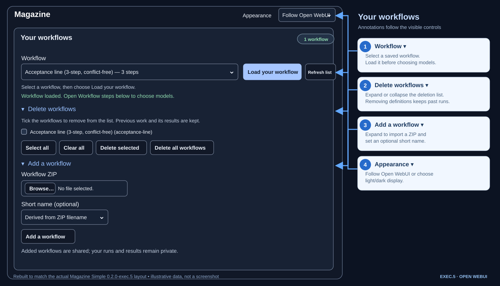
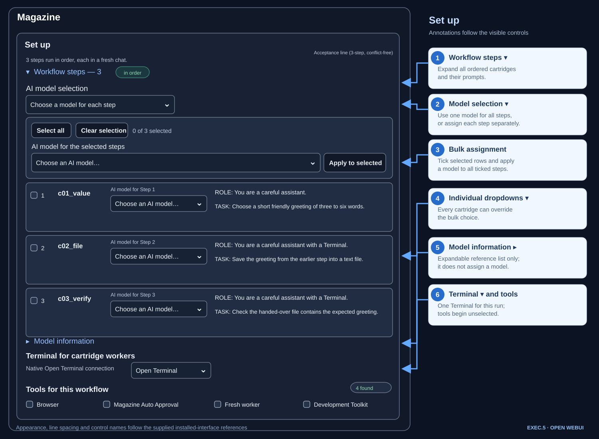
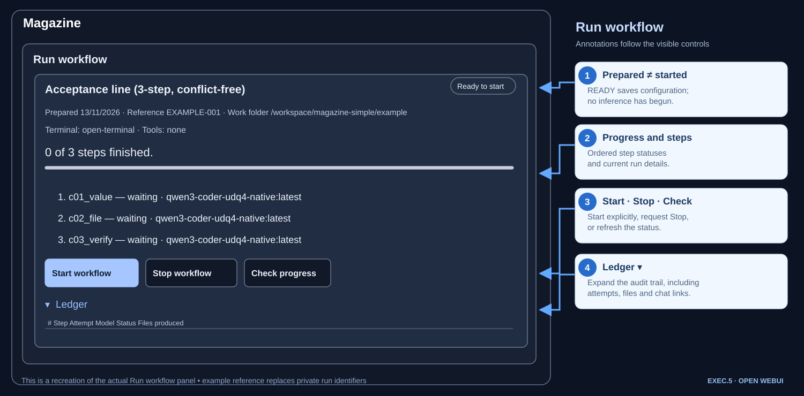
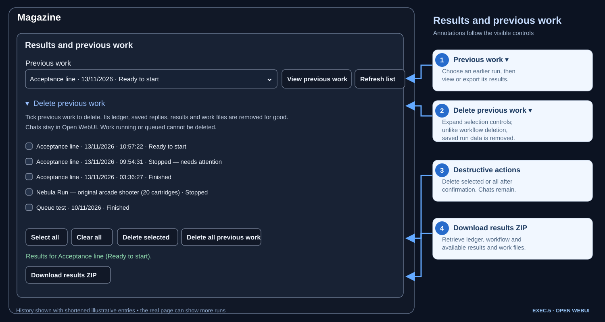

Big projects. Smaller tasks. One orderly workflow.
Magazine breaks a planned project into steps called cartridges. Each runs in a fresh AI chat with an assigned model. Magazine records the output, hands over declared files to later steps and keeps the sequence organised.
This is a recreated, self-contained documentation page, not a live Magazine session. The sample buttons that would change server data are deliberately non-functional. The model-choice demonstration is interactive.
The actual Magazine layout, reconstructed
These four annotated panels follow the real controls and screen order in the supplied 13 November 2026 screenshots. They are purpose-built diagrams rather than generic dashboard imagery; real run data has been replaced with examples.




One run, step by step
Create or import a workflow, choose one model for every step or assign models individually, choose a Terminal and any tools needed, prepare the run, then start it explicitly.
“Finished” means execution ended and the result was saved; it does not establish that the AI's answer is correct.
What each control does
Based on the supplied installed-interface screenshots. Each stage recreates its part of the page with numbered, arrow-linked explanatory notes. For clarity, the screenshots themselves are not reproduced and the example list is shortened.
01 — Your workflows
Browse, load and import
Your workflows
1 workflowSelect a workflow, then choose Load your workflow.
Workflow loaded. Open Workflow steps below to choose models.
Delete workflows
Tick workflows to remove from the list. Previous work and its results are kept.
Add a workflow
Local illustrative control only. Nothing uploads.
Add a workflow
Added workflows are shared; your runs and results remain private.
02 — Set up
Model assignment, Terminal and tools
Set up
3 steps run in order, each in a fresh chat.
Workflow steps — 3 in order
TASK: Generate a short greeting.
OUTPUT: One-line JSON.
TASK: Save the prior greeting to a file.
INPUT: Earlier-step result.
TASK: Verify the handed-over file contents and record the result.
Try the selection dropdown above to see how the real interface changes.
Model information
Available models (reference only). Choose using the selection controls above.
Terminal for cartridge workers
Choose once for this run. Every step uses this Terminal.
Tools for this workflow
4 foundNo tools are selected by default. Selected tools are available to every step, subject to host/model permissions.
Prepare workflow
Saves the choices for this run. Nothing starts until you select Start workflow.
03 — Run workflow
READY is different from running
Run workflow
Acceptance line (3-step, conflict-free)
Ready to startPrepared: example · Reference: EXAMPLE-001 · Work folder: /workspace/magazine-simple/example-run
Terminal: open-terminal · Tools: none
0 of 3 steps finished.
- c01_value — waiting · Qwen3 Coder
- c02_file — waiting · Qwen3 Coder
- c03_verify — waiting · Qwen3 Coder
Ledger
| # | Step | Attempt | Model | Status | Files produced |
|---|---|---|---|---|---|
| 1 | c01_value | — | Qwen3 Coder | pending | — |
| 2 | c02_file | — | Qwen3 Coder | pending | — |
| 3 | c03_verify | — | Qwen3 Coder | pending | — |
The same ledger is saved as LEDGER.md in the work folder and download.
04 — Results and previous work
History, saved results and deletion
Results and previous work
Delete previous work
Tick the previous work to delete. Its ledger, saved replies, results and work files are removed for good. Chats stay in Open WebUI. Running/queued work cannot be deleted.
Results for Acceptance line (Finished).
Download results ZIPFor coders and engineers
Expand the technical details when needed. For complete provenance, see the exec.5 technical record and the launcher guide and verified runner source.
Installed version versus published source
Installed locally: Magazine Simple 0.2.0-exec.5, served at /magazine-simple, and Sidebar Launcher 0.1.0 on Open WebUI 0.12.5. The launcher adds a navigation item in a new tab; it does not run workflows.
Old downloadable package: 0.1.0-beta.5 under /magazine. The byte-matched exec.5 source is now available separately; there is no independently verified clean-install package for it.
Verified exec.5 live acceptance
On 13 November 2026, the existing Function was updated in place. Pre-existing 178 run-folder files remained hash-identical. A live three-step run 20261113-093654-9352d6 completed with qwen3-coder-udq4-native:latest, Open Terminal and no extra tools. Steps 2 and 3 invoked real run_command calls; the handover was verified and result.json reported match: true. The inline DONE completion path was exercised in step 2.
The Chromium deletion interface was inspected but no live deletion was performed. Firefox interactions and host container logs were not verified.
Runner sequence and file handover
Workflow ZIP → import and validate → assign models
↓ choose Terminal and tools
Prepare → READY → explicit Start
↓
Step 1: fresh chat → save reply/output
↓ declared file handover
Step 2: fresh chat → run Terminal command → save files
↓ declared file handover
Step 3: fresh chat → verify file contents → save result
↓
Ledger + previous-work history + results ZIPDo not infer a successful external task solely from a finished cartridge, or call older beta.5 tests a fresh exec.5 pass.
What the Sidebar Launcher does
Launcher 0.1.0 injects a Magazine navigation link pointing to /magazine-simple via Open WebUI's static loader.js. It opens in a separate tab and does not request an API token or execute a cartridge. Loader backups and installation metadata are kept under DATA_DIR/magazine-simple/sidebar-launcher/. Read the security and compatibility notes before installing.
Source identity and distribution limits
Installed Function code: SHA-256 prefix/suffix 400f8bf4…1309, 111,367 bytes. Served page.html: b1b41a55…2f97. These are abbreviated identifiers from the local installation report, not downloadable artefact hashes. The older beta.5 ZIP remains the only archived installer here. The exact exec.5 source has been added for review, without claiming a separately validated clean-install package.